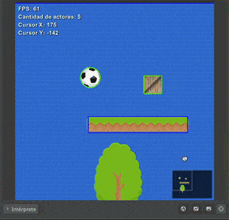

Незважаючи на те, що гра матиме фіксований розмір екрана, ми можемо використовувати камеру, яка дозволяє нам переміщуватися по сцені, щоб показати інші її частини.
У цьому розділі ми будемо керувати камерою сцени як і з редактора, так і з запущеної гри.
Щоб перемістити камеру, нам потрібно просто клацнути та перетягнути мишею на тлі сцени:

У сцені рух камери відображається в параметрах "Камера X" і "Камера Y".
Також ці два параметри використовуються для визначення початкового положення камери, коли гра запускається.
Інші два параметри під назвою "Ширина" та "Висота" визначають загальний розмір сцени. Ви можете змінити значення цих параметрів, щоб збільшити або зменшити загальну сцену.
Щоб перемістити камеру, ми можемо отримати прямий доступ до параметрів позиції, наприклад, якщо ви хочете постійно рухати камеру вправо, ви можете написати цей код для сцени:
Або, якщо ви хочете, щоб актор вільно пересувався сценою, а камера весь час слідкувала за ним, ви можете використати метод seguir_al_actor:
Цю функцію потрібно викликати кожного разу, тому ми маємо включити її в метод оновлення actualizar(){...}.
Метод seguir_al_actor приймає 3 параметри:
actor: актор, за яким має стежити камера.suavidad: це має бути число, яке вказує на те, наскільки поступовим має бути рух камери, чим менше число, тим швидшим і різкішим буде рух камери.ignorar_bordes: останній параметр має бути true або false. Якщо зазначено true, камера слідуватиме за актором, навіть якщо він залишить сцену, це ідеально для ігор із нескінченною зоною руху. Якщо встановити false, камера зупиниться на межі сцени.Камера також дозволяє збільшувати масштаб за допомогою параметру з назвою escala.
Наприклад, якщо ми хочемо збільшити масштаб камери, необхідно використовувати параметр escala зі значеннями, більшими за 1:
this.camara.escala = 2.5;Або поверніться до початкового масштабу, ввівши:
this.camara.escala = 1;Бувають випадки, коли ми хочемо, щоб актор залишався зафіксованим у своїй позиції, незалежно від руху камери.
Наприклад, результати гравця не є тим, що має зникати з крену, коли камера рухається, аналогічно і елементи керування та лічильник життя мають залишатися видимими на екрані.
Для того, щоб цей тип актора було видно на екрані, ми повинні визначити властивість fijo таким чином:
this.fijo = true;Ця властивість із значенням true вказує на те, що цей актор не повинен рухатися, не дивлячись на камеру, а повинен залишатися нерухомим на екрані весь час.